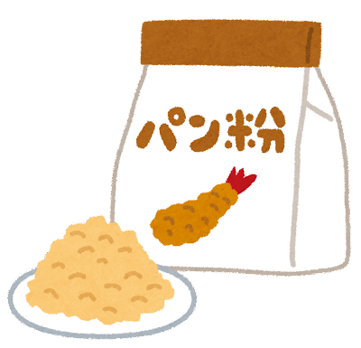

panko
Panko, or パン粉, is a variety of flaky breadcumb used in Japanese cuisine, used as a crunchy coating for frieds foods. It's lighter than and more crispy than breading in Western cuisine, it doesn't absorb oil or grease as readily when fried. Panko is made from bread baked by electrical current, which yields a bread without a crust, and then grinding the bread to create fine slivers of crumb (see video).